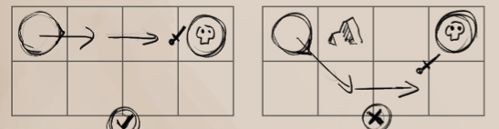
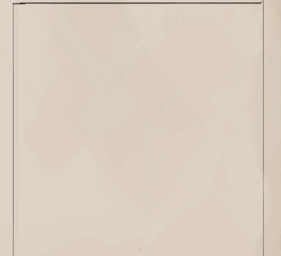

Although characters may move regularily during combat, there are a few additional rulings and movement options that are possible using the character's actions.
Charging (1 Standard + 1 Move) : A creature may choose to charge a target, gaining +1 to their attack, instead of simply moving and attacking. This can onlly be done if the creature has a clear line between themselves and their target and is at least 3 tiles away.
A charge cannot change direction.
Changing Facing Direction (1 Immediate) : A character may change their facing direction by up to 2 tile degrees whenever a foe attempts to attack them in order to properly face their opponent.

While the creature may change direction to face B, the creature attacking from C is too far to face in one action.
Prone/Standing Up : A very short action. Can be used in reaction to enemy or allied actions even if not one's turn.
Characters moving through difficult terrain are hindered and lose a certain amount of their movement speed and dodge.
Tame (Sand/Rocky Terrain/Undergrowth) :-2 Movement (Min. 1), -1 Dodge
Difficult Terrain (Brush, Marshlands, Ruin Rubble) : Half or -4 Movement (whichever is worse, Min 1), - 3 Dodge.
Difficult Terrain (Quicksand) : No Movement, -6 Dodge.
Should a character wishes to harm another for any reason, be it with sword or bow, the must declare an attack action. The rolls associated with attacking must be rolled per attack, not one roll for all attacks.
To see if an attack hits one's opponent, the attacking creature must roll against their opponent's dodge. Compare these values on the roll chart then roll to see what the outcome would be. (See Dice Rolls chart)
Critical Success : The attack hits and the attacker gains 2 additional might on their attack
Success : The attack hits, with no additional bonuses.
Partial Success : The opponent was able to parry the blow. They add their Parry or Blocking values to their Armour.
Fail : The opponent dodges the attack. The attack doesn't hit and can't be rolled for Striking.
Critical Fail : MELEE The opponent outmaneuvers the attacker and may use an immediate action to make an attack of opportunity. (See further) RANGED : Fumble and drop your weapon.
Bonus Text!